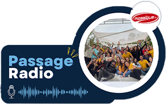
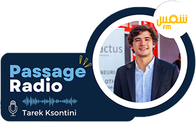

Around 200.000
Tunsians still rely on contaminated
drinking water
people lack access to clean water
80% of all illness in the developing world are
water related
Le passage radio de notre source de joie Yosr Belaam et Malek Kassab à radio MosaïqueFM Un spécial remerciement à Yosri Jedidi et Ismail Ben Aissa pour nous offrir l’opportunité de promouvoir notre projet💙
 16-05-2022L'interview #Startup de notre Team Leader Tarek Ksontini à Shames FM Un spécial remerciement pour l'équipe de Shames FM pour nous offrir l’opportunité de promouvoir notre projet
 18-05-2022L'interview #Startup de notre Team Leader Tarek Ksontini à Shames FM Un spécial remerciement pour l'équipe de Shames FM pour nous offrir l’opportunité de promouvoir notre projet
18-05-2022